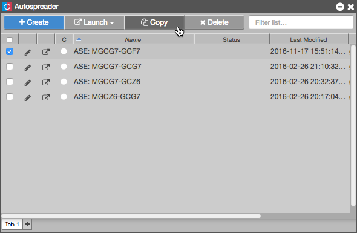

  <p>To copy an Autospreader spread:</p> 
            <ol>
              <li>Click the checkbox next to the spread you wish to copy.
         
          </li>
              <li>Click the <strong>Copy</strong> button.

              	     <p></p>


              </li>
              <li>Click the pencil icon to edit the new spread</li>
               
              <li>Provide a new name, color and adujst parameters</li>
              <li>Click <b>Save</b></li>
           
            </ol>